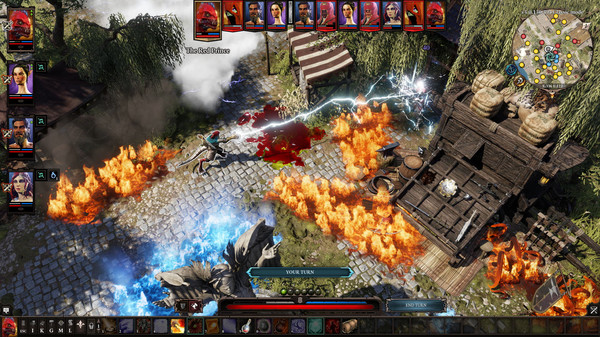

Our Games
Explore our collection of award-winning games.
Baldur's Gate 3

Baldur's Gate 3 is a story-rich, party-based RPG set in the universe of Dungeons & Dragons, where your choices shape a tale of fellowship and betrayal, survival and sacrifice, and the lure of absolute power.
(2023) The Game Award for Game of the Year
(2023) BAFTA Games Award for Best Game
Divinity: Original Sin II
The critically acclaimed RPG that raised the bar, from the creators of Baldur's Gate 3. Gather your party. Master deep, tactical combat. Venture as a party of up to four - but know that only one of you will have the chance to become a God.
Game Informer: Best PC Exclusive
Global Game Awards: Best Co-op
PC Gamer: Game Of The Year